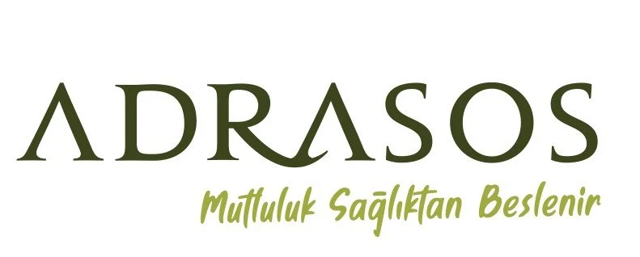
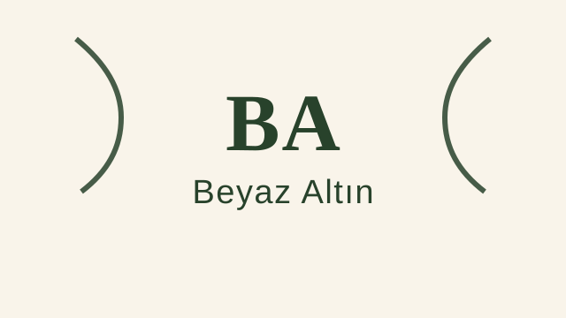
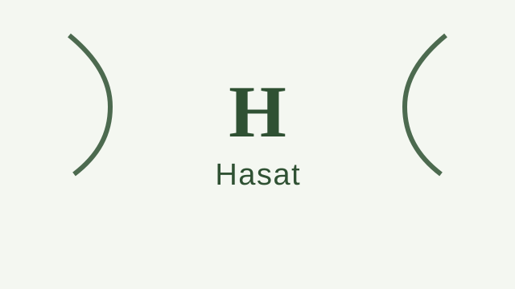
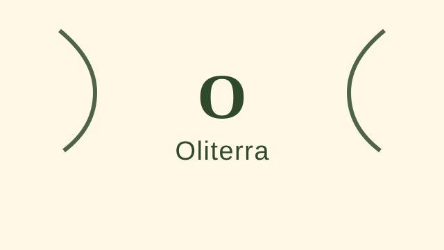
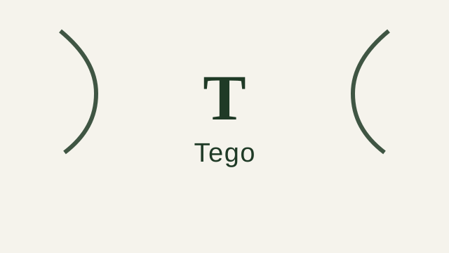

Premium / Butik
Premium ve butik üretim odaklı zeytinyağı markaları, erken hasat ve sınırlı seri ürünleriyle öne çıkar.
Premium / Butik odaklı zeytinyağı markaları, benzer bölgeler ve ilgili zeytin çeşitleri. 62 marka listesi.
Bu Sayfadaki Markalar
Adatepe
Kazdağları eteklerinde üretim yapan köklü marka. Taş baskı ve natürel sızma zeytinyağı çeşitleriyle bilinir....
Hatnar
Erzin, Hatay merkezli üretici marka. Soğuk sıkım natürel sızma zeytinyağı ve yöresel zeytin ürünleri sunar....
Laleli
Ödüllü Türk zeytinyağı markası. Uluslararası yarışmalarda çok sayıda altın madalya kazanmıştır. Erken hasat natürel sızma zeytinyağları ile bilinir....
Mera Ovası
Marmara bölgesinde, Erdek çevresindeki Gemlik tipi zeytinlerden butik üretim yapan artizanal zeytinyağı markası. Küçük partiler halinde soğuk sıkım natürel sızma zeytinyağı üretir....
Nermin Hanım Zeytinliği
Ayvalık merkezli butik üretici. Erken hasat ve izlenebilir üretim yaklaşımıyla natürel sızma ürünler sunar....
NovaVera
Kuzey Ege merkezli butik üretici. Erken hasat, soğuk sıkım ve yüksek polifenol odaklı natürel sızma zeytinyağlarıyla bilinir....
Oleamea
Premium segment Türk zeytinyağı markası. Uluslararası yarışmalarda ödüller kazanmıştır. Erken hasat, yüksek polifenollü natürel sızma zeytinyağları sunar....
Vivax Olea
Şarköy, Tekirdağ hattında üretim yapan marka. Kontinü sistem ve soğuk sıkım serileriyle Trakya'da öne çıkar....
Zetiya
Hatay odaklı erken hasat natürel sızma serileriyle öne çıkan butik marka. Cam şişe ve teneke ambalajlı ürünler sunar....

Premium / ButikAdrasos
Mut bölgesinden premium natürel sızma serileri sunan marka. Cam ve galon ambalajlı zeytinyağlarıyla öne çıkar....
Anafortis
Eceabat çıkışlı, ödüllü erken hasat natürel sızma zeytinyağlarıyla tanınan butik üretici....
Anolive
Ayvalık bölgesinde premium natürel sızma zeytinyağı üretimi yapan marka....
Artem Oliva
Butik üretim odaklı natürel sızma zeytinyağı markası....
Ayolis
Ayvalık bölgesinden premium natürel sızma zeytinyağı üreten marka....
Berolivo
Eceabat çıkışlı sürdürülebilir ve yüksek kaliteli natürel sızma zeytinyağı üreten butik marka....

Premium / ButikBeyaz Altın
Premium Türk zeytinyağı markası. Erken hasat zeytinlerden üretilen natürel sızma zeytinyağları ile dikkat çeker....
Buta Assos
Assos bölgesinde üretilen zeytinlerden premium natürel sızma zeytinyağı sunan marka....
Çoral
Eceabat çıkışlı ödüllü natürel sızma zeytinyağı serileri sunan butik üretici....
Gaia Oliva
Ayvalık hattında üretim yapan marka. Natürel sızma ve özel seri zeytinyağı ürünleri sunar....
Galli Premium
Eceabat Çan Ovası mevkiinden natürel sızma zeytinyağı üreten butik marka....
Gallipolive
Eceabat üretim tesislerinde soğuk pres natürel sızma zeytinyağı hazırlayan butik marka....
Granpa
Marmara bölgesi odaklı üretici marka. Trilye/Gemlik hattında natürel sızma ürünleriyle öne çıkar....

Premium / ButikHasat
Ege bölgesinden erken hasat zeytinyağı üreten marka. Erken hasat (early harvest) konseptiyle premium natürel sızma zeytinyağı sunar....
Hermus
Akhisar ve çevresindeki zeytinlerden üretilen premium natürel sızma zeytinyağı markası....
İlyada
Çanakkale Geyikli'den kaliteli Türk zeytinyağı markası. Natürel sızma zeytinyağı ve sofralık zeytin çeşitleri sunar....
Josevia
Ayvalık çevresindeki zeytinlerden sürdürülebilir üretim anlayışıyla natürel sızma sunan premium çizgi. Erken hasat ve soğuk sıkım ürünleriyle bilinir....
Kavaki
Erdek çıkışlı erken hasat natürel sızma zeytinyağı serileriyle öne çıkan butik üretici....
Kirte
Eceabat Alçıtepe çıkışlı natürel sızma zeytinyağları sunan yerel üretici....
Kozoliv
Gömeç merkezli Kuzey Ege üreticisi. Üç nesillik aile mirası, erken hasat ve natürel sızma serileriyle öne çıkar....
Küçükbahçe
Karaburun çevresinden naturel sızma zeytinyağları sunan, geleneksel lezzet vurgulu butik üretici....
Lamponia
Ayvacık Kozlu çıkışlı erken hasat natürel sızma zeytinyağlarıyla öne çıkan aile üretimi butik marka....
MASMANA
Kilis kökenli dördüncü nesil aile üreticisi. Organik ve natürel sızma odaklı, erken hasat ve özel seri yağlarıyla öne çıkar....
Mavras
Urla merkezli butik marka. Sınırlı seri ve erken hasat natürel sızma zeytinyağı üretimi yapar....
Milasso
Milas çıkışlı yüksek polifenollü premium natürel sızma üreticisi. Erken hasat soğuk sıkım ve hediyelik seri seçenekleri sunar....
MonOlive
Premium zeytinyağı markası. Tek çeşit zeytinlerden üretilen butik natürel sızma zeytinyağları sunar....
Mutili
Mut merkezli modern üretici marka. Cam şişe ve teneke ambalajlı natürel sızma serileri sunar....
Nar Gourmet
Premium gıda markası olup zeytinyağı portföyü de bulunur. Türk lezzetlerini dünyaya tanıtan ödüllü markadır....
Nish Olive
Premium butik zeytinyağı markası. Sınırlı üretimli, özenle seçilmiş tek çeşit zeytinlerden yüksek kaliteli natürel sızma zeytinyağı üretir....
Olea Prilis
Premium butik zeytinyağı markası. Uluslararası kalite standartlarında, düşük asitli natürel sızma zeytinyağı üretir....
OleTurk
Milas ve Ege havzasından zeytinlerle üretim yapan marka. Natürel sızma odaklı ürün portföyü sunar....
Oliella
Seferihisar çıkışlı erken hasat, soğuk sıkım natürel sızma zeytinyağları sunan butik üretici....
Olistica
Butik üretim yapan premium zeytinyağı markası. Sınırlı sayıda üretilen, tek çeşit (monocultivar) zeytinyağları ile tanınır....

Premium / ButikOliterra
Yükselen Türk zeytinyağı markası. Natürel sızma zeytinyağında kalite odaklı üretim yapar....
Olivamore
Butik üretim anlayışına sahip zeytinyağı markası. Erken hasat natürel sızma ürünleri sunar....
OliveOilsLand
Zeytinyağı ürünlerinde premium ve butik segmentte yer alan marka....
Olivos
Zeytinyağı bazlı ürünleriyle tanınan Türk markası. Zeytinyağı satışının yanı sıra zeytinyağlı sabun ve kozmetik ürünleri de üretir....
Olivurla
Urla bölgesinden premium zeytinyağı üreten butik marka. Urla'nın eşsiz mikro ikliminde yetişen zeytinlerden üretim yapar....
Olivya Gökçeovacık
Milas bölgesinde faaliyet gösteren butik marka. Yöresel karakterli natürel sızma zeytinyağı üretir....
On7 Zeytinyağı
Çanakkale yöresindeki kendi zeytinlerinden soğuk sıkım natürel sızma zeytinyağı üreten butik marka....
Oro di Milas
Milas bölgesinde aileye ait modern tesiste üretim yapan premium üretici. Coğrafi işaretli natürel sızma çizgisi ve kadın girişimciliği vurgusuyla öne çıkar....
OVE Foods
Zeytin ve zeytinyağı odaklı gıda markası. Natürel sızma ve gurme segment ürünler sunar....
Özgün Olive
Butik üretim yapan zeytinyağı markası. Soğuk sıkım natürel sızma zeytinyağı ve aromatik zeytinyağı çeşitleri sunar....
Palamidas
Akhisar merkezli aile üreticisi. Soğuk sıkım natürel sızma ve organik serileriyle öne çıkar; resmi mağazasında cam şişe ve teneke seçenekleri sunar....
Pazarbaşılar
Eceabat ve Gelibolu Yarımadası çevresinden natürel sızma zeytinyağları sunan köklü üretici....
Semylasa
Milas yöresinden üretim yapan premium marka. Natürel sızma zeytinyağı çeşitleriyle öne çıkar....
Seosfarm
Seferihisar hattında erken hasat ve özel seri natürel sızma zeytinyağları geliştiren üretici....
Solive
Gemlik zeytini ve erken hasat zeytinyağı serileriyle öne çıkan bölgesel marka. Zeytin Ağacı mağaza yapısı içinde satış yapar....

Premium / ButikTego
Modern tasarımlı premium zeytinyağı markası. Genç nesil tüketicilere hitap eden şık ambalajlarıyla öne çıkar....
Terra Arteka
Erdek çıkışlı yüksek polifenollü erken hasat natürel sızma zeytinyağı üreten butik marka....
Velvet
Bursa hattında Gemlik tipi zeytinlerden üretim yapan üretici. Orhangazi-İznik çevresindeki zeytinlerden natürel sızma seriler sunar....
Verde
Kuzey Ege odaklı zeytinyağı markası. Erken hasat natürel sızma ve farklı ambalaj seçenekleriyle öne çıkar....
ZenOlive
Edremit tipi Ayvalık zeytinlerinden soğuk sıkım yağ üreten küçük ölçekli üretici. Tek bahçe ve iyi tarım vurgusuyla öne çıkar....